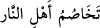
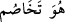

64. İşte bu, cehennem ehlinin tartışması, şüphesiz bir gerçektir.
“İşte bu, cehennem ehlinin” kesin olarak vukû bulacak olan “tartışması,” hikâye
edilen halleri “şüphesiz bir gerçektir.”
(__WORD__) ifâdesi, mahzûf bir mübtedânın haberidir. Cümle de bu mahzufu beyân
etmektedir ki takdiri (__WORD__) şeklindedir. Yâni, gerçek olan reislerle bunların
peşinden
gidenlerin
(tâbîlerin)
tartışacak
olmasıdır.
Başka
bir
ifâdeyle
cehennemliklerin tartışması, mücâdelesi ve başlarından geçenler bir gerçektir.
Bu ifâde, ileride olacak bir şeyi haber vermektedir. Birbiriyle tartışan hasımlar
arasında cereyan eden suâl-cevap tarzındaki atışmalara benzetilerek bu tartışmaya da
“tehâsum” denmiştir.
et-Te’vîlâtü’n-Necmiyye’de der ki: “(İnkârcılar) derler ki: Kendilerini dünyada
iken kötülerden saydığımız kimseleri burada niçin görmüyoruz?” ifâdesi,
cehennemliklerin bizzat kendileriyle atışmalarına işâret etmektedir. Müminlerle dalga
geçmiş oldukları gibi, burada da kendileri ile dalga geçip şöyle demektedirler:
“Kendilerini dünyada iken kötülerden saydığımız kimseleri burada niçin
görmüyoruz?” Şerli olmadıkları halde, “Alaya aldığımız onlar değil miydi? Yoksa
(buradalar da) onları gözden mi kaçırdık?” Hiç şüphesiz kendileriyle böyle atışmaları
vâki olacak ve cehennemlikler, atışma ve pişmanlığın hiçbir fayda vermeyeceği bir
sırada böyle bir atışma yapacaklardır.
Bu âyet-i kerimede kibirli zenginler için bir yerme (zemm) ve sabırlı fakirler için de
bir övgü (medih) bulunmaktadır.
Hadiste buyurulur ki: “Fakirlerin devleti gelmezden önce onlar nezdinde kendinize
bir yer edinin; onlardan el alın. Çünkü kıyamet günü gelip çattığında, Allah Teâlâ
fakir ve miskinleri bir araya getirir; kendilerine şöyle denir: Şu sîmâları inceden
inceye bir süzün, dikkatlice inceleyin bakalım. Dünyada iken size bir lokma yediren
bir bardak içecek içiren bir hırka giydiren ya da hakkınızda yapılmış bir gıybeti
bertaraf eden herkesin elinden tutup cennete götürün!”[40]
Hâfız der ki:
Ufuklardan ufuklara kadar zulüm ordusu vardır ancak,
Ezelden ebede kadar fırsat dervişlerin (fakirlerin)dir.
Ünsü’l-munkatı’în’de geçtiği üzere bir hadiste şöyle buyurulur: Cennetin sultanları
üstü başı dağınık yüzü gözü tozlu-topraklı kimselerdir ki bunlar dünyada birinden izin
istediklerinde kendilerine izin verilmez; bir kıza talip olduklarında onunla
evlendirilmez; bir şey söylemek istediklerinde hiç kimse dinlemez. Hâlbuki bunlardan
herhangi birinin nuru yeryüzü halkı arasında taksim edilecek olsa, hepsini de kuşatırdı.
Hâfız der ki: